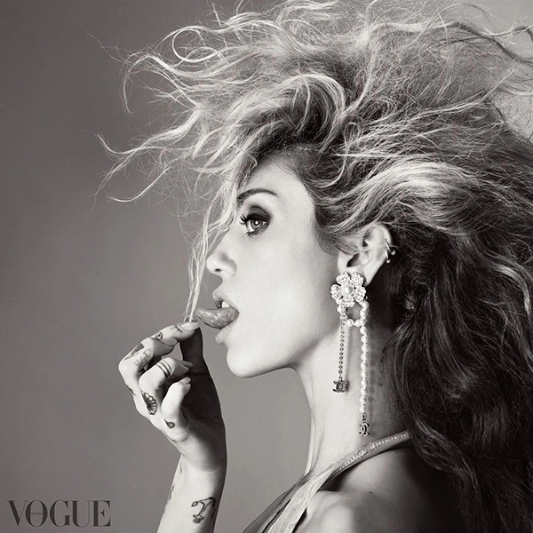
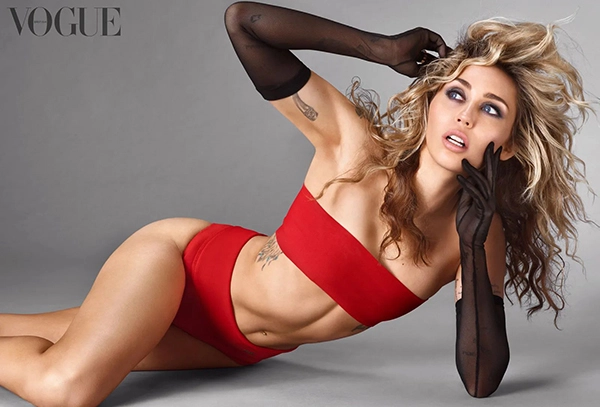

BY GILES HATTERSLEY
Miley Cyrus’s reputation as the wildly talented TV princess turned pop provocateur may precede her, but beneath the stories, the songs and the headlines, Giles Hattersley discovers a woman at peace with herself. Photographs by Steven Meisel. Styling by Edward Enninful
Miley Cyrus explodes into the room in a black Saint Laurent slip dress, a two-foot Gucci beefeater-style hat on her head.
“Is it sickening,” she demands rhetorically, her delicious southern rasp familiar in a way only a squillion light years of celebrity living can make it. In her thrall, festooned around the suite on the 33rd floor of The Ritz-Carlton New York, NoMad, sit her travelling chorus of creatives, the indispensable “comfort blanket” of five men who embody the sort of modern Hollywood bohemia she adores, and who accordingly she goes everywhere with. They offer consensus: yes. Just to be sure she struts the room wall-to-wall, eyes darting.
Cyrus – now 30 (how is she only 30?), with several lifetimes of glory, nonsense, trauma and good times under her belt – is in showgirl mode. For the moment, at least. My word, she’s a gas. “What is with this art?” she asks hammily between poses, offended by some neutral swirls in a picture frame. Then she catches sight of herself on the iPhone screen of Stephen Galloway, acclaimed choreographer and her friend. “It’s giving Pam Tillis,” she decrees, patting the towering fluffy black helmet to the delight of her troop, before launching into a funny, gossipy tale about said Pam, the bouffanted country singer, who she met recently and who asked her to pass her best on to Cyrus’s godmother, Dolly Parton, which she dutifully did. Parton sweetly replied, “Oh, Pam, I haven’t seen her in years.”
“But thennn,” says Cyrus, tingling with delight, “I went on to Pam’s Instagram and what do you know? There’s a photo of her with Dolly [taken recently]! Country shade,” she declares of her beloved Dolly: “You can’t beat it.” She dives on to the bed next to me, shaking out her bleachy, rooty, sexy hair. Fear not. The monologue keeps going: “Dinosaur dust art”; “These earrings are not it”; “Am I going on tour? Yeah, the Aman hotel tour. Singing in the lobby for that complimentary massage.”
Subscribe to British Vogue
To wit: a gas. Although you can’t help noticing it takes close to 20 minutes for Cyrus to sustain eye contact that lasts longer than a second. She is, seemingly, not a person who takes joy in the novelty of strangers, who doesn’t trust them right away. Frankly, why should she?
But while the initial energy is remote and flighty, it takes absolutely no time at all to become riveted by her. Astonishingly famous since her early teens, hers is a fate perhaps only understood by a handful of people during mass media’s relatively short history. One’s reductive first instinct is to interpret her thrilling lack of chill as toxic-media-induced, post-child-stardom neurosis. But she is having none of that.
The shopworn narrative of a famous woman’s survival and triumph? “So f**king basic.” Some time later, when it’s only us chatting, she says, “One thing I wouldn’t want this story to become is a complaint of being a woman in the industry. I don’t need this to be a women’s empowerment story. I wear my empowerment at all times. I don’t need to profess it.”

“I carried some guilt and shame around myself for years because of how much controversy and upset I really caused.” Halterneck bikini top and glass-pearl and strass earring, Chanel Steven Meisel
In truth, she is sage, witty and unpredictable, prone to find the whole machinery of fame ridiculous and damaging – especially for women. She is essentially done with engaging or even talking about the whole rodeo. Certainly in trad media terms. “Why would I do British Vogue?” she wonders aloud at one point later, just the two of us on a sofa. “Why would I even do an interview?” She seems genuinely curious to have found herself here.
Well, real talk. She was dying to be photographed by Steven Meisel. She also happens to be enjoying one of the most successful years of her career as a musician, to say nothing of her arrival at a new fashion peak, thanks to a fabulous run of vintage looks at her New Year’s Eve special for American network television, and a smattering of judicious appearances, including at the Versace runway show in LA in the days before the Oscars (an absolute fashion nut, she is quick to credit her beloved personal stylist Bradley Kenneth’s hand in her current era of killer looks).
Then there is “Flowers”. At the time of writing, the song – an addictive comeback single that has made its way to instant classic status – has spent eight weeks at the top of the US Billboard charts, with another 10 consecutive at No1 in the UK. In early May it became the fastest song in the history of Spotify to clock up a billion streams. Released in January, at this point its staying power is so remarkable it seems in danger of becoming the song of the summer. Who knows. Given the album is called Endless Summer Vacation – which, for Miley, is as much lifestyle mantra as record title – perhaps it will?
She achieved her latest internet-smashing moment despite doing next to no press. A boss move. Instead, she tossed the song out into the world and let social media eat itself alive. Are the lyrics of self-care and personal triumph (“I can love me better than you can”) a direct riposte to her ex-husband, the Australian actor Liam Hemsworth? Did the video, with more than 435 million views on YouTube (and counting), exquisitely directed by Jacob Bixenman, with nods to Helmut Newton and Michael Mann, really feature Cyrus wearing one of Hemsworth’s old tux jackets?
Subscribe To The Vogue Daily Newsletter
She has no time for any of this. “I never need to be a master at the craft of tricking an audience,” she says, shrugging. “It will set itself on fire all by itself.” Rather than an explicit diary of her experience, she says she simply wanted to make a song that she could do with hearing. “I wrote it in a really different way. The chorus was originally: ‘I can buy myself flowers, write my name in the sand, but I can’t love me better than you can.’ It used to be more, like, 1950s. The saddest song. Like: ‘Sure, I can be my own lover, but you’re so much better,’” she says. In the end she rejected the gloom. “The song is a little fake it till you make it,” she says. “Which I’m a big fan of.”
She immediately sensed it was a hit – “I’ve been doing this for a while” – and so the night of the release she went out dancing with her crew at the Sunset club at The West Hollywood Edition. “I’m sober. I don’t drink, I don’t… you know, but I celebrate. It’s like one o’clock in the morning and Lil Nas X walks into the club and he asks me the most interesting question. He said: ‘Are you so anxious about how successful ‘Flowers’ is?’”
She thinks about it again now. “I was like, ‘No. I might be No1 now, but No2 is on its way.’ Everything is seasonal,” she says, her grey-blue eyes finally alighting on mine. She thinks we all need to be more honest about the false god of unfluctuating success – even pop stars. “A lot of headlines [recently] have said, ‘This is Miley’s moment.’ And I’m like, ‘That’s exactly what it is. It’s a moment. And it will be over.’”
“That’s not pessimistic,” she continues, smiling. “That’s honest and that’s OK with me. I actually prefer it. I don’t like to stay big.” When Endless Summer Vacation was released she wasn’t even in LA and didn’t have her phone with her. “My boyfriend brings his phone and I don’t bring one. I had no way of knowing what number it would [chart at], and it wasn’t of importance to me because it wouldn’t have changed anything. Someone could say, ‘It would be this number if you did that, or this number if you sell your soul…’” She shrugs again. “I’ve been in the Garden of Eden before and I’ve taken the red apple, and it never feels good.”

“Do I want to live my life for anyone else’s pleasure or fulfilment other than my own?” Stretch viscose knit bandeau bra and knickers, Ferragamo. Mesh gloves, C’est Jeanne. Gold, platinum, rubellite and diamond ring, Tiffany & Co. Steven Meisel
So here we are. Miley’s first sit-down interview in some time and she’ll be damned if she’s going to sell herself to me or you. She knows what that game looks like too well. I’m not sure anyone who didn’t achieve global prominence in the entertainment industry as a teen in the distinct quagmire of Noughties media could understand it better. First, of course, came Hannah Montana in 2006. The crazily successful Disney show, in which she played a teenage pop star with a double life, became such a phenomenon that she ended up selling out stadiums around the world in minutes (the Hannah Montana & Miley Cyrus: Best of Both Worlds Concert becoming the highest-selling concert film of all time). A daughter of country singer Billy Ray Cyrus, she has been managed by her adored mother Tish since day one, while her adolescent life was a truly head-spinning mix of standard Tennessee home life plus superstar day job, with a top note of prurient, morally muddled public interest in her coming of age that was, even at the time, distinctly gross.
It certainly sounds like too much for a person to handle, but I will say it’s made Cyrus incredibly smart. She is unique among anyone I’ve interviewed in her assessment of fame; she is almost Neo-esque in her ability to see the green code of the matrix around her. “I’m actually not an attention-seeking person, sitting here as a 30-year-old grown woman,” she says. Miley’s aware that her explosion into early adulthood, whether riding naked on a demolition ball in the video for “Wrecking Ball” or her twerk-tastic performance at the 2013 MTV Music Video Awards, still occupies space in the public consciousness. “I was creating attention for myself because I was dividing myself from a character I had played. Anyone, when you’re 20 or 21, you have more to prove. ‘I’m not my parents.’ ‘I am who I am.’”
She is movingly even-natured when she goes on to describe the fallout: “I carried some guilt and shame around myself for years because of how much controversy and upset I really caused,” she says. “Now that I’m an adult, I realise how harshly I was judged. I was harshly judged as a child by adults and now, as an adult, I realise that I would never harshly judge a child.”
Her tone is that of a person who has processed her fury. But wow. Sometimes she laughs about it. A friend asked her for some skincare advice recently and in a joking response she sent them a story a tabloid magazine ran a decade ago in which they’d highlighted her acne and gone with the headline: “A Breakout Year!” Jesus. “Right? Like who thought that I was not a person who would be hurt by that? Like I was clearly a 20-year-old girl. Sure, at 20 I was like every 20-year-old. You think you’re grown, but now I’m like, ‘Oh, no, I was fully a kid.’” She still gets weirded out by what she sees published about herself. “I was reading this thing the other day about women in the industry who don’t have children and I was on the list,” she says, alongside the likes of Helen Mirren, Oprah Winfrey and Dolly. Her takeaway? She’s done trying to tool her statements or make life choices that are about making everyone happy.
Interestingly, for someone with more than 207 million Instagram followers, this extends to her fans. Don’t get her wrong. She’s grateful. But says she can’t live her life for them anymore. She loves an audience but not in the way she grew up on. “Look, the kiki follows me everywhere that I go,” she says of Galloway, Bixenman and Kenneth, as well as Bob Recine and James Kaliardos (her personal hair and make-up team), all of whom are kicking around today. “I love performing but pretty much for them,” she says, smiling. “Like singing for hundreds of thousands of people isn’t really the thing that I love. There’s no connection. There’s no safety.” I guess it’s pretty hard to people-please 100,000 individuals simultaneously? “Right,” she says, nodding. “It’s also not natural. It’s so isolating because if you’re in front of 100,000 people then you are alone.”